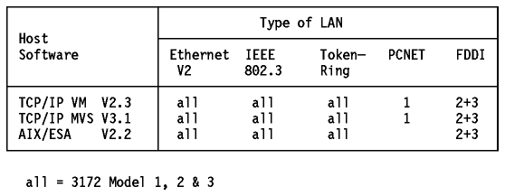
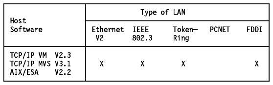
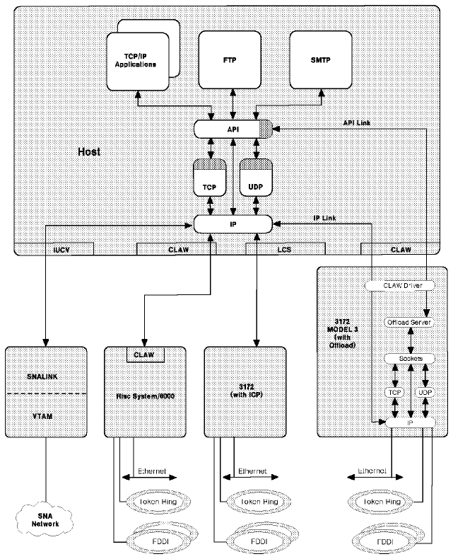

Table of Contents
Table of Contents  Connections
ConnectionsThe IBM 3172 Interconnect Controller can be configured as a LAN gateway, an offload gateway or a remote channel-to-channel controller, to provide high-performance interconnection from the S/370 and S/390 hosts to the LAN environments.
The following tables show the various connections supported by the three
models of the 3172.

Figure: LAN Types Supported on the 3172 with Interconnect Control
Program (ICP)

Figure: LAN Types Supported on the 3172-3 with the Offload
Feature
Notes:
Both the MVS and VM TCP/IP provide the SNMP subagent functions for the 3172 running ICP. They also provide 3172-specific MIB support.
The 3172 Model 3 can be configured to provide an Offload function to the TCP/IP for MVS Version 3.1. This function offloads some of the TCP/IP processing from the MVS host to the 3172. The current estimates show that this function can achieve 30% reduction in the host CPU cycles.
This configuration of the 3172-3 requires OS/2 V2.11 (OS/2 SE V1.3.2 is also supported, but OS/2 V2.11 is recommended), TCP/IP Version 2.0 for OS/2, the TCP/IP MVS Offload feature, the 3172-3 Offload hardware feature and the appropriate hardware adapters.
The 3172-3 is channel-attached to the MVS host, using one subchannel pair. The TCP/IP MVS offload processing uses the CLAW (Common Link Access for Workstation) protocol for communicating between the TCP/IP MVS host and the 3172-3 Offload host. Two logical links are used over the subchannel pair (please see Figure - IBM 3172-3 Interconnect Controller):
All TCP, UDP and IP header processing for the data transferred to and from the MVS host is performed in the 3172-3. The data is passed, via the API link, directly to the API interface on the TCP/IP MVS host, bypassing the IP, TCP and UDP layers on the TCP/IP MVS host.
Other datagrams not destined for the MVS host are routed by the IP layer of the TCP/IP MVS host over the IP link.
CLAW is designed to achieve two goals:
TCP/IP MVS creates and updates the routing table on the offload 3172-3 based on its own routing table.
Note: Since the 3172-3 offload function handles all ICMP packets, it
responds to ICMP echo requests (from ping, for example) even if TCP/IP MVS is
not running.

Figure: IBM 3172-3 Interconnect Controller - TCP/IP Offload
Processing.
For more details on TCP/IP Offload processing, please refer to the IBM TCP/IP Version 3 Release 1 for MVS: Offload of TCP/IP Processing.
 HYPERchannel
Adapter
HYPERchannel
Adapter